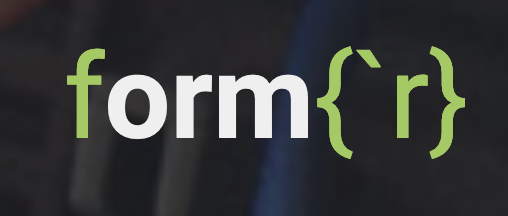

Teaching research methods using formr
A great alternative to Qualtrics for people at schools without access.
 Image credit: Greg Rosenke on Unsplash.
Image credit: Greg Rosenke on Unsplash.
The course 🎒
It’s useful to know a bit about my course first to help you decide if the information in this post will be useful to you.
Where I teach doesn’t have any psych majors and my course doesn’t have any psych pre-reqs. It’s a small school that doesn’t have a Qualtrics license. The students are mostly science and engineering majors so they are generally tech-savvy, but they don’t all have much programming experience.
The course itself is focused on replication – students don’t design their own studies – and I choose which studies they will be replicating. So I have control over the complexity of the study designs they’ll be using.
(You can see the course syllabus here.)
So what I was looking for was a platform for running online studies that was free, pretty easy to learn, and had enough base functionality to create some simple study designs.
What is formr? 🛠️

Enter formr. Compared to alternatives, formr best met all these criteria. Some other options to consider:
- Qualtrics: Most behavioral scientists already know Qualtrics. It’s easy to use and super flexible. But it’s not free and I don’t have access to it where I work.
- PsyToolkit: I’ve used PsyToolkit in the past. It’s fairly easy to learn, even for people with little programming experience. It’s probably a better choice over formr if you need to do more cognitive-type experiments where you control what people see on the screen at certain times and collect response time data. But I don’t really like the interface and it’s more advanced than what I needed.
- jsPsych: Another good choice if you want more advanced options. But it would require teaching more programming than my course had time for.
What worked 👍
Despite the somewhat confusing documentation, students caught on to the basics of formr pretty quickly. To supplement the official documentation, I made the following tutorial that you are welcome to share1.
Although I didn’t get any specific reports of this, another benefit of formr is that you initially build the experiment in Google Sheets, which was nice when students were working in groups because it was so easy for them to collaborate.
What didn’t work 🙄
There were some issues with the formr.org website itself. I’m incredibly grateful to the formr team, but it’s a small operation and it’s probably not equipped to handle the rising interest formr has received over the past year or so. I believe this was responsible for the two main problems I encountered:
-
In order to make experiments on the
formr.orgwebsite, you need an admin account, and new accounts have to be manually approved. After my students signed up, they weren’t approved for about 1.5 weeks. In the end, this wasn’t catastrophic, but our term is only 10 weeks, and it caused me to have to delay the deadline of the first formr-based assignment. Not ideal. -
Once students were in the thick of collecting data for their final projects, I got multiple reports of the formr site going down. Also not good.
The solution?
I learned that the formr team actually recommends installing your own instance of formr so you don’t have to rely on their website.
I haven’t done this myself so I can’t say anything about it. But my plan for the next time I teach this course is to talk to the IT department at my school and see about installing formr on a college server. This should address the sign-up and downtime problems that we suffered this past term.
tl;dr 📔
formr is free, requires no set-up (if you run it from the existing website) and can be used to do most of what Qualtrics can do with minimal learning. (It can do a lot more advanced stuff too if you are willing to learn more.)
I think it’s a great choice for research methods courses that want to offer students a simple solution for building good-looking ✨ and functional ⚙️ online studies.
Alan Jern
Associate Professor of Psychology
I study social cognition using computational models and behavioral experiments.